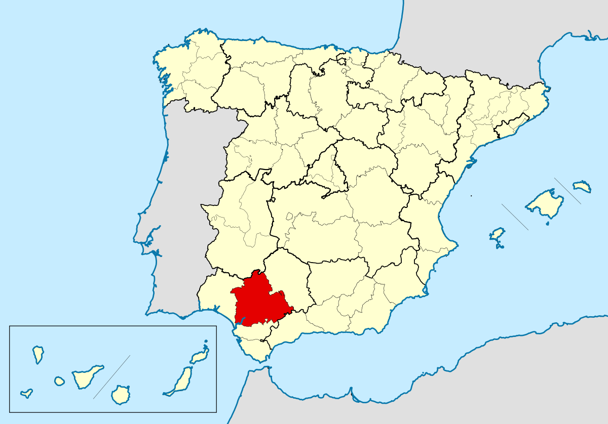
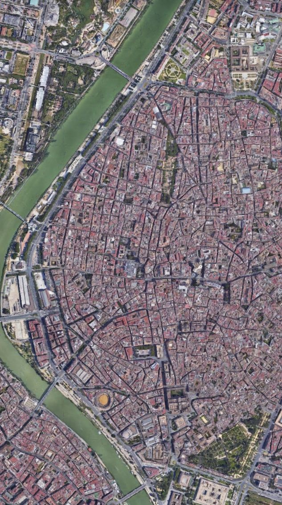

Sevilla es una ciudad española, situada en la Comunidad Autónoma de Andalucía en el sur de la península ibérica.
Cuenta con unos 700 mil habitantes siendo la cuarto ciudad más poblada en España.

La ciudad está ubicada en plena depresión y llanura aluvial del Guadalquivir. Así pues, el municipio se encuentra en un terreno muy plano y de baja altitud.
Su casco antiguo, con 3,9 km², es el más extenso de España y además es una de las ciudades con más monumentos catalogados en Europa.

Su patrimonio histórico y monumental y sus diversos espacios escénicos y culturales la constituyen en ciudad receptora de turismo nacional e internacional.
En la arquitectura de Sevilla han dejado constancia las civilizaciones que han habitado la ciudad, con una riqueza monumental muy importante, tanto en edificios
religiosos como civiles, con influencias de romanos, visigodos, árabes, movimientos europeos, racionalismo, modernismo y regionalismo historicista andaluz.
En el patrimonio histórico-artístico de la ciudad pueden observarse varios estilos como gótico, mudéjar, renacentista, barroco, neoclasicismo, romanticismo, etc.